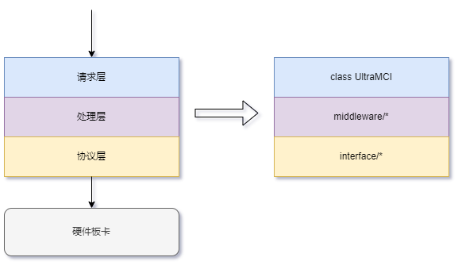
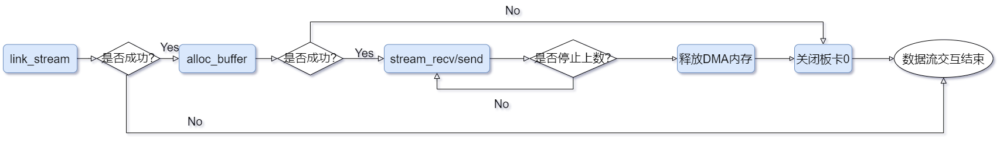
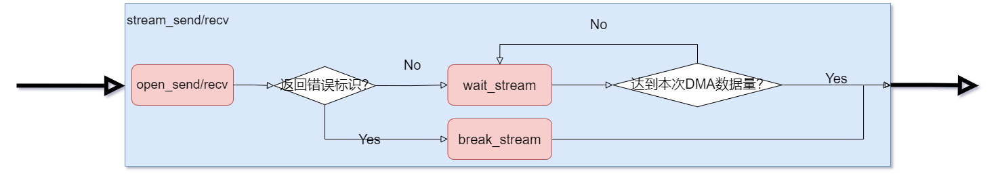

目录
基本结构

- 本SDK提供的接口主要针对射频/数字组件与cpu的交互，将整个交互流程划分为
请求层、处理层、协议层三个部分
- 请求层:
- 将组件提供的各种参数的读取和配置，看作对一个寄存器的读写，那么参数名即为
寄存器地址，参数值为寄存器值
- 将与组件的数据流交互看作一次次DMA，可以指定使用的dma通道、内存地址、数据大小等进行一次dma
- 处理层: 组件与cpu之间可能会约定各种各样的上层交互协议，那么可以在中间处理这一部分中实现上层协议，并将此协议的最终控制接口转为请求所需的读写寄存器和DMA格式
- 协议层: 对诸如TCP、串口、axi_lite、axi_stream等标准通信协议，进行封装。
- 基于这三个部分的划分，
协议层、处理层的变更不会影响基于请求层开发的任何程序
自闭环仿真
- 待办事项:
- SimCmdUItf、SimStreamUItf类正在完善
- 提供SimCmdUItf、SimStreamUItf两个虚拟协议类，可以模拟与板卡的通信过程，支持写入记忆、数据流仿真等一系列功能，方便 在没有硬件条件时测试上层程序
#include <iostream>
#include "NSUKit.h"
size_t buf_len = 1024*1024;
for (int i=1; i<len; i++) {
*(buf+i-1) = (char )i;
}
};
kit.link_cmd(¶m);
kit.link_stream(¶m);
auto fd = kit.alloc_buffer(buf_len);
auto data_ptr = kit.get_buffer(fd, buf_len);
kit.write(0x10000000, 1);
kit.write(0x10000000, 0);
kit.stream_recv(0, fd, buf_len, 0);
if (*(uint8_t *)data_ptr == 1) {
std::cout << "模拟上行数据成功" << std::endl;
}
return 0;
}
DLLEXTERN typedef nsuSize_t nsuStreamLen_t
DLLEXTERN typedef char * nsuCharBuf_p
void(* sim_stream_func)(nsuCharBuf_p buf, nsuSize_t length)
向输入的内存中写入模拟数据的函数
数据流交互
同步接口

- 同步方式数据流交互接口: NSUSoc.stream_send、NSUSoc.stream_recv
- 如下示例在host上申请了一片1G的内存，对前1kB写入数据递增数，将这1kB数据下发到板卡
kit.link_stream(¶m);
int buf_len = 1024*1024*1024;
auto fd = kit.alloc_buffer(buf_len);
auto data_ptr = kit.get_buffer(fd, buf_len);
if (int i =0; i<1024*1024; i++) data_ptr[i] = i;
kit.stream_send(0, fd, buf_len, 0);
异步方式

- 提供异步数据流交互接口: NSUKit.open_send、NSUKit.open_recv、NSUKit.wait_stream、NSUKit.break_stream
- 接口在开启数据流后立即返回，不等待说有数据传输完成，用户可以在数据流传输过程中继续执行其它操作
#include <iostream>
#include <fstream>
#include "NSUKit.h"
int main(
int argc,
char *argv[]) {
const int ds_chnl = 0;
std::ofstream outf;
std::cout << "当前示例" << argv[0]
<< "为展示基于PCIE的数据上行的接口调用示例，功能为从板卡0的数传通道0上行指定数量的数据并写入文件" << std::endl;
if (argc != 4) {
std::cout << "不受支持的传参方法" << std::endl;
std::cout << argv[0] << " {IP} {totalBytes} {filePath}" << std::endl;
return 1;
}
if (total_len % 4 != 0) {
std::cout << "上行数据总长度total_len " << total_len << "Bytes应为 " << 4 << "Bytes的整倍数" << std::endl;
return 1;
}
auto res = kit.link_cmd(¶m);
}
res = kit.link_stream(¶m);
}
auto ds_buf = (char *)kit.get_buffer(mem, total_len);
res = kit.execute("系统开启");
}
res = kit.open_recv(ds_chnl, mem, total_len, 0);
std::cout << "成功开启DS交互" << std::endl;
ds_state = kit.wait_stream(mem, 1000.);
}
}
std::cout << *(uint32_t *)ds_buf << std::endl;
res = kit.execute("系统停止");
}
outf.open(argv[3], std::ofstream::binary);
outf.write(ds_buf, total_len);
outf.close();
kit.free_buffer(mem);
return 0;
}
@ NSUKIT_STATUS_STREAM_RUNNING
DLLEXTERN typedef size_t nsuSize_t
DLLEXTERN typedef void * nsuMemory_p
std::string NSU_DLLEXPORT status2_string(nsukitStatus_t status)
nsuBoardNum_t stream_board
Copyright © 2023 耐数 naishu.tech 北京耐数电子有限公司